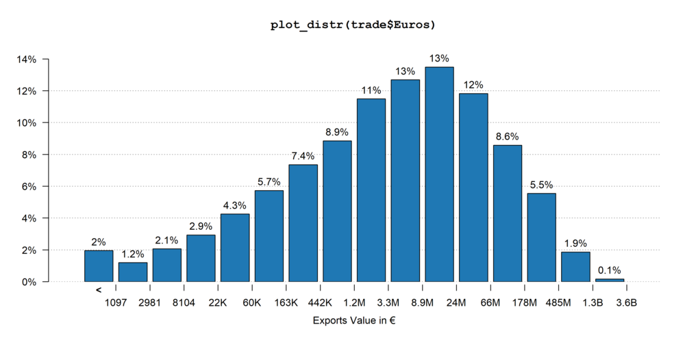
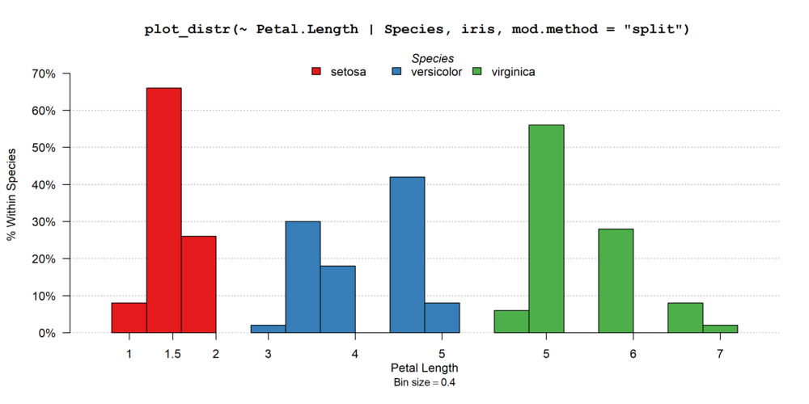
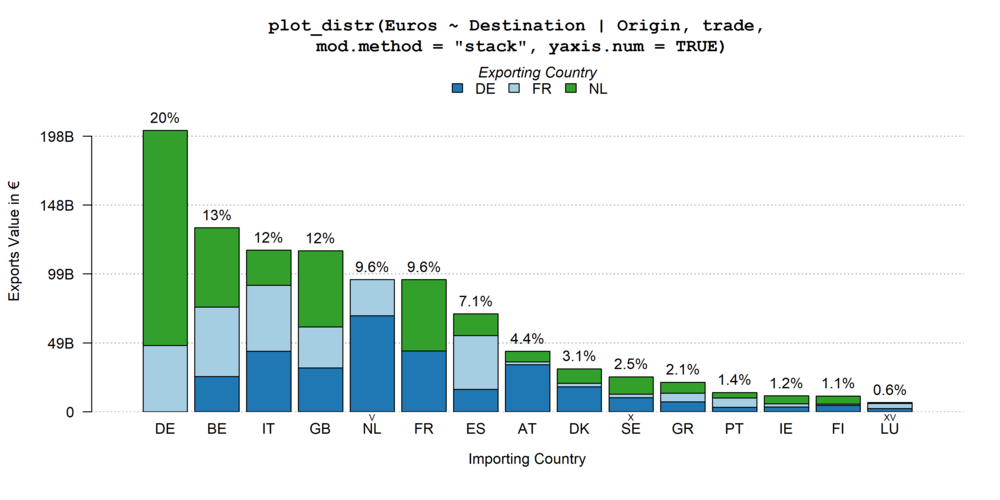

fplot is an R package made for the easy plotting of distributions.
The problem when it comes to distributions is that we often face a variety of data, each requiring a different type of layout: we don’t represent the distribution of categorical variables similarly to continuous variables, and regarding the latter heavily skewed data may require a special treatment. The aim of fplot is to automatically make choices for the user in order to always display meaningful (and hopefully beautiful!) graphs.
This brief description shows a gallery of fplot possibilities. For a more detailed introduction, please see the walk-through.
The data sets used are us_pub_econ (from fplot) relating to publications in economics from US institutions, trade (from package fixest) relating to trade value between countries for some products in the European Union, and the iris data set (from base R).
One aim of fplotis to easily export graphs, it therefore includes a tool to relabel the variable names globally (once and for all). The following line is run before plotting the graphs:
setFplot_dict(c(Origin = "Exporting Country", Destination = "Importing Country", Euros = "Exports Value in €",
jnl_top_25p = "Pub. in Top 25% journal", jnl_top_5p = "Publications in Top 5% journal",
journal = "Journal", institution = "U.S. Institution", Petal.Length = "Petal Length"))The code to run the plots are in the titles of the graphs. You’ll notice that the same command line can result in a set of different graphs.







